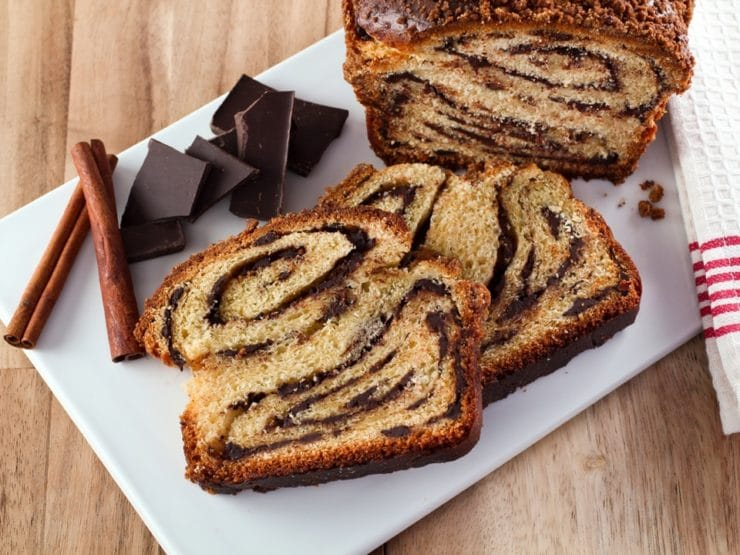

Babka from Eastern Europe

Description
A babka is a sweet braided bread or cake which originated in the Jewish communities of Poland, Russia and Ukraine.
It is prepared with a yeast-leavened dough that is rolled out and spread with a filling such as chocolate, cinnamon, fruit, or cheese,
then rolled up and braided before baking.
It consists of either an enriched or laminated dough;
which are similar to those used for challah, and croissants respectively, that has been rolled out and spread with a variety of sweet fillings such as chocolate, cinnamon sugar, apples, sweet cheese, Nutella, mohn, or raisins, which is then braided either as an open or closed plait,
topped with a sugar syrup in order to preserve freshness and make the bread moister.
It is sometimes topped with a streusel topping.
Ingredients
- All purpose flour
- Yeast
- Milk (preferably whole milk)
- Butter
- Dark chocolate
- Eggs
- Salt
- Cocoa powder
- Cream
- Powdered sugar
Steps
- Whisk together the flour, sugar, and yeast in the bowl of a stand mixer.
- Add the eggs, milk, and salt and mix at low speed using the dough hook attachment until combined and a dough starts to form for about 2 minutes.
- Add the butter one tablespoon at a time. Let the butter incorporate before adding more.
- Continue to knead for 10 more minutes; the dough is ready when it feels sticky but still very stretchy.
- Transfer the dough to a large oiled bowl, and cover. Let the dough rise for 8 hours or overnight in the fridge.
- When the dough is ready, divide it in half and roll them out, one at a time, on a lightly floured surface into a 12×16-inch rectangle.
- Make the filling by combing the butter and cream in a saucepan before melting in the chocolate. Whisk in the powdered sugar and cocoa powder before letting it cool to thicken.
- Use an offset spatula to spread the chocolate filling over the rolled dough.
- Roll the dough from the short-end into a tight coil, and pinch the seam to seal. Then cut the dough in half lengthwise.
- Twist the halves together, keeping the cut sides facing up before transferring to a prepared loaf pan. Cover and let rise again before baking for 40 minutes or until golden brown.
- Enjoy!